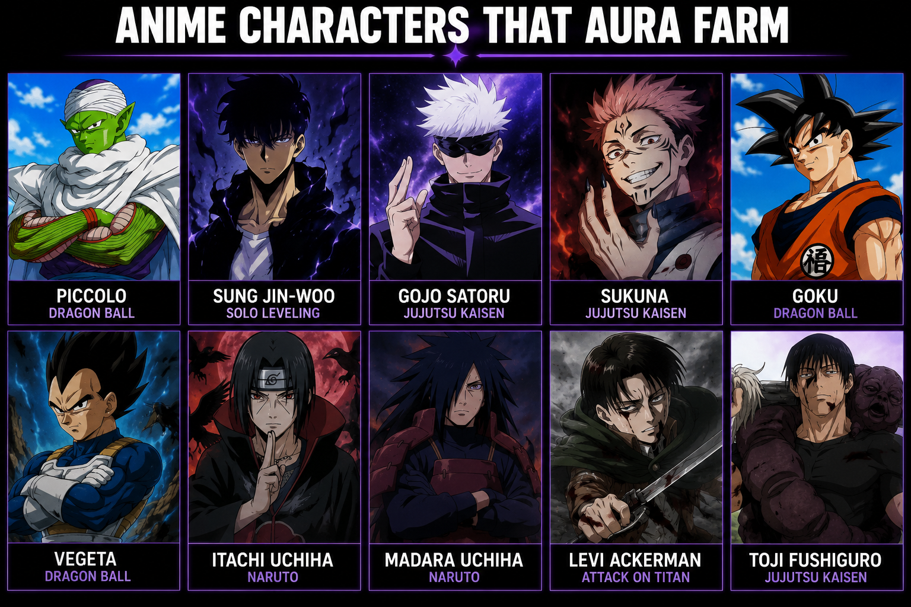

Hello everyone welcome to my website. This website help you to become a Aura Farmer
What Is The Meaning Of Aura FarmingAura farming is a slang expression used on the internet, especially on social media, gaming communities, TikTok, YouTube, and among young people. It describes a person who deliberately does things that make them appear cool, confident, impressive, mysterious, powerful, or attractive in order to gain what people call “aura.” The word “aura” does not literally mean something you can see around a person. In slang, it means the vibe, presence, confidence, or coolness that someone seems to have. A person with a lot of aura may appear confident and naturally impressive without even trying. The word “farming” comes from the idea of repeatedly collecting or gaining something. Just like a player might farm coins, XP, or resources in a video game, someone who is aura farming is repeatedly doing things that they believe will give them more “cool points” or make people admire them.
To become a Aura farmer you need to follow this step one by one
You score the winning goal in a football match. Instead of jumping around and celebrating, you calmly turn around and walk away while everyone is shouting.
“Bro is farming aura.” 🔥
+1000 aura
You make a very difficult three-point shot at the last second. You don't celebrate. You just turn around and walk away confidently.
“Massive aura.” 🗿🔥
You're the last player alive. Everyone expects you to lose, but you defeat all the opponents and then calmly walk away from the victory.
“BRO IS AURA FARMING 💀🔥”
+2000 aura
Your teacher asks an extremely difficult question. Nobody knows the answer, but you answer correctly immediately and quietly sit down.
“Bro just farmed aura.” 😎
Everyone around you is panicking because something went wrong, but you remain calm and solve the problem.
“Bro gained +500 aura.”
You walk into a room confidently wearing a really nice outfit. Everyone looks at you, but you don't react.
“Bro came in farming aura.” 🔥
Someone drops their books. You help them pick everything up, give the books back, and walk away without asking for praise.
“+300 aura.”
You put on your headphones, look serious, and slowly walk away while acting mysterious.
“Bro thinks he's the main character 💀.”
“He's farming aura.” 😂
Someone scores an extremely easy goal and then does a huge dramatic celebration just so everyone will notice them.
“-200 aura. Bro is forcing the aura.” 💀
Someone tries to perform a cool basketball trick to impress everyone, but they miss the ball and fall down.
Everyone laughs.
“-500 aura.” 💀😂
Amine Aura Farming means The act of a amine character intentionally performing a dramatic, over-the-top, or nonchalant action solely to look cool, exude power, and earn hypothetical "aura points" from the audience.
